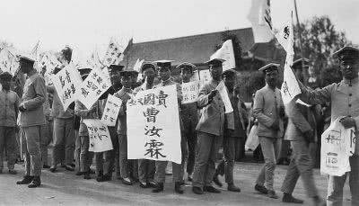
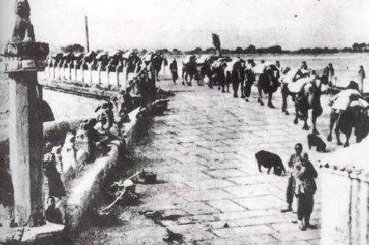
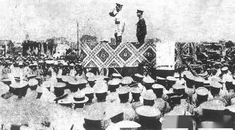
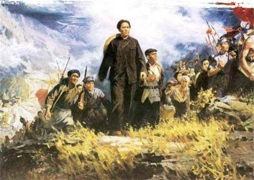

新文化运动
新文化运动是从1915年9月15日《青年杂志》在上海创刊开始的。陈独秀任主编，李大钊是主要
撰稿人并参与编辑工作。《青年杂志》于1916年9月出版第二卷第一期时，迁往北京并改名为《新青年》，
李大钊、胡适、鲁迅等成为主
要撰稿人。蔡元培出任北京大学校长后，邀请了许多有新思想的学者到校任教。这样，《新青年》和北京大学成
为新文化运动的主要阵地。进步知识分子团结在《新青年》周围，高举民主和科学两面大旗，从政治观点、学术
思想、伦理道德、文学艺术等方面向封建复古势力进行猛烈的冲击。他们集中打击作为维护封建专制统治思想基
础的孔子学说，掀起“打倒孔家店”的潮流。他们还主张男女平等，个性解放。1917年起他们又举起“文学革命”
的大旗，提倡白话文，反对文言文，提倡新文学，反对旧文学。随着新文化运动的发展，《新青年》实际上成了
新文化运动的思想领导中心。
《新青年》从1918年1月出版第四卷第一号起改用白话文，采用新式标点符号，刊登一些新诗，这对革命思想的传
播和文学创作的发展，起着重要的作用。特别是伟大的文学家、思想家和革命家鲁迅，1918年5月在《新青年》上
发表了中国现代文学史上第一篇白话小说《狂人日记》，对旧礼教旧道德进行了无情的鞭挞，指出隐藏在封建仁义
道德后面的全是“吃人”二字，那些吃人的人“话中全是毒，笑中全是刀”，中国2000多年封建统治的历史就是这吃
人的历史，宣告“将来容不得吃人的人，活在世上”。
新文化运动的新阶段
1917年爆发了伟大的俄国十月社会主义革命，震动了全世界，也照亮了中国革命的道路。十月革命的胜利给中国带
来了巨大影响，使中国先进的知识分子看到了民族解放和民族复兴的希望。新文化运动由此有了新的内容，进入了宣
传十月革命、宣传马克思主义的新阶段。
《新青年》应社会形势发展的需要，以大量篇幅发表了宣传俄国十月革命的经验和社会主义理论文章。1918年11月，
《新青年》发表了李大钊同志写的《庶民的胜利》《布尔什维主义的胜利》两篇著名论文，热烈欢呼俄国社会主义革
命的胜利。
在陈独秀、李大钊等人的领导下，提倡科学，反对迷信，提倡民主，反对独裁，提倡白话文，反对文言文的新文化运动，
宣传了西方的进步文化。以后，又传播了社会主义思想，反映了新型的革命阶级的要求，在社会上产生了巨大的反响。
新青年
这一运动的深入发展，吸引了许多年轻人，特别是青年学生集合在反帝反封建的旗帜下，为迎接一场彻底的反帝反封建的
政治斗争作好了思想准备。这次运动的主要缺点是其领导人没有把运动普及到群众中去，只是局限在知识分子圈子里，他
们除了一般的政治口号外，没有提出实现民主政治的具体办法。同时他们形式主义地看问题，不能正确地对待中国文化遗
产。但这个运动在政治上和思想上给了封建主义一次前所未有的沉重打击，在思想界形成了一次新的思想解放潮流，为五
四运动奠定了思想基础。
五四运动后，宣传马克思主义成为新文化运动的主流。当十月革命给中国送来马列主义的时候，新文化运动发生了根本的
变化，由一个资产阶级文化革命运动转变为一个广泛宣传马列主义的运动，《新青年》也逐渐变成宣传马列主义的刊物。

五四运动
新思想与社团
革新思想在晚清尤其是在甲午战争之后大量传入中国并影响年轻一族，而在民国初年这
种影响随着陈独秀所创办的《青年》杂志（后改名为《新青年》）等刊物的发展以及白
话文运动的推动，自由、反抗传统权威等思想，影响了学生以及一般市民。新文化运动
高举民主、科学的大旗，从思想、文化领域激发和影响了中国人尤其是中国青年的爱国
救国热情，从根本上为五四运动的出现奠定了思想基础和智力来源。
社团组织在中华民国的发展，包括少年中国学会、工学会、新民学会、新潮社、平民教
育讲演团、工读互助团等等，为五四运动在全国的开展奠定了组织基础。
高等教育发展
北京高等师范学校
北京高等师范学校
中国的科举制度在清末“新政”中，因学习西方及日本学制而改变，于1905年被废除。到
了民初，北京大学、北京高等师范学校（现北京师范大学）等高校获得进一步的发展，
尤其是北京大学，在校长蔡元培的领导下，引进了开放的学风，提出了“思想自由，兼容
并包”的办学方针，李大钊、陈独秀、章士钊、胡适、辜鸿铭（英国文学）、刘师培、鲁迅
（周树人，教中国小说史）、钱玄同（教音韵学）、吴梅（教戏曲史）、刘半农（教新文
学）等被聘请于北大任教。北大同时注重培养学生独立自主开放进步的思想和精神，这种思
想和精神成为五四运动的重要动力。
国耻情绪
五四运动时的徐世昌政府
五四运动时的徐世昌政府
1914年8月23日，日本对德国宣战，经70多日激战，于1914年11月7日占领全部的德国租借
地胶州湾。
1915年1月，日本向中国提出“二十一条”，袁世凯在5月9日，接纳了其中大多数的要求，这
原本日方要求保密的协定，为新闻界所得知，并发布该协定，激起了民族主义的情绪，使中国
知识分子及民众对日本以及“卖国”的政府强烈不满，认为这是国耻，同时也引起了不少反日的
活动，这种情绪在五四运动中进一步发展，并发挥了作用。
1917年8月14日，北洋政府向德国宣战，成为第一次世界大战的“参战国”,即加入了协约国。
1918年初，日本向段祺瑞控制下的北京政府提供了大量贷款，并协助组建和装备一支中国参
战军，其贷款还被用于安福国会庞大的贿选开支。
同年9月，北洋政府与日本交换了关于向日本借款的公文，作为借款的交换条件之一，又交换了
关于山东问题的换文，其主要内容为：
胶济铁路沿线之日本国军队，除济南留一部队外，全部均调集于青岛。
关于胶济铁路沿线的警备：日军撤走，由日本人指挥的巡警队代替。
胶济铁路将由中日两国合办经营。
北洋政府在换文中，对日本的提议“欣然同意”。驻日公使章宗祥向日本政府亲递换文，后被北京
学生痛殴。在第一次世界大战中中国对德宣战，与日本同为战胜国，但德国在山东的权益不仅没
有收回，反而被日本扩大了，这一换文成为巴黎和会上日本强占山东的借口。
工商背景
清末以来，中国的工商业虽有所发展，但在西方产品的输入情形下，中国本土工商业的发展仍然
有限，第一次世界大战的发生使欧洲各国无力东顾，中国的工商业获得很大的发展，参与工商业
的人口持续增加，民族工业，尤其是轻工业得以巨大发展，城市中的工商阶层在中国社会中的地
位也更显重要，在五四运动中，他们成为声援爱国学生的重要力量。
北洋政府内部派系的权力斗争
六三运动
六三运动
“五四运动”前后，北洋政府总统、内阁、国会之间达成了某种平衡，故政治运作较先前为畅顺。
当时政府领导者为大总统徐世昌、国务总理钱能训，及“安福国会”幕后领袖段祺瑞。但政府仍深
受各个党派、各地军阀的制约，政策因之时有变异。“五四运动”发生之后，“研究系”以政府外交
失败做斗争“安福系”工具，藉传媒煽动学生举办爱国示威游行，并进一步造成“六三运动”，使得
学运风潮扩大，最终逼使相关政府领导人下台负责。除此之外，“文治派”与“安福系”也借机相互
攻讦，以谋求自我派系之利益。是以“五四运动”绝对不可以单单理解为群众在爱国意识之下的自
发行为；事件源起、扩大都深受党派斗争之影响。
1914年第一次世界大战爆发，日本借口对德宣战，攻占青岛和胶济铁路全线，控制了山东省，夺
取德国在山东强占的各种权益。
1918年第一次世界大战结束，德国战败。
1919年1月18日，战胜国在巴黎召开“和平会议”。北洋政府和广州军政府联合组成中国代表团，
以战胜国身份参加和会，提出取消列强在华的各项特权，取消日本帝国主义与袁世凯订立的“二十
一条”等不平等条约，归还大战期间日本从德国手中夺去的山东各项权利等要求。巴黎和会在帝国
主义列强操纵下，不但拒绝中国的要求，而且在对德合约上，明文规定把德国在山东的特权，全部
转让给日本。北洋政府竟准备在“对德和约”上签字，从而激起了中国人民的强烈反对。最终激起青
年学生的“五四运动”，是我国民主新文化运动的重要里程碑。

七七事变
日本早在明治维新时期，在确立近代天皇制的同时，迅速走上了扩张侵略的军国主义道路，
并制定了以中国、朝鲜为主要侵略对象的所谓“大陆政策”。20世纪初叶，日本于日俄战争
后取代俄国，在中国东北扩大殖民势力，屯驻关东军，设立殖民机构“南满铁路公司”，把
东北作为对中国殖民扩张的基地。第一次世界大战期间，日本利用西方列强无暇东顾，极
力扩大对华侵略，出兵山东，胁迫袁世凯接受日本妄图鲸吞中国的“二十一条要求”，把侵
略魔掌伸向中国内地。一次大战后，日本企图通过加紧掠夺中国、朝鲜和其他亚洲国家，摆
脱政治、经济危机，在1927年的“东方会议”上对侵略中国问题进行了精心策划。1931年9
月18日，日本对我国东北发动突然袭击，3个多月就占领东北全境。翌年日军进攻上海(一·
二八事变)，并攻占大片华北土地，威逼平津，又在东北建立伪“满洲国”、在华北搞所谓“自
治运动”，妄图长期占领这些地区。1936年日本制定的总体战略计划――“国策基准”出笼后，日
本举行了一次“将官”演习，向参加演习的将官交代了全面发动侵华战争的战争部署 。
日本侵略者自1931年九·一八事变侵吞我国东北后，为进一步挑起全面侵华战争，陆续运兵入
关。到1936年，日军已从东、西、北三面包围了北平（今北京）。
从1937年6月起，驻丰台的日军连续举行挑衅性的军事演习
南昌起义
起义的目的是反抗国民党反动派的屠杀政策，唤醒广大中国人民，表明中国共产党要把中国革命
进行到底的坚定立场，共产党的目的是联合愿意革命的国民党左派，挥师南下广东，建立革命根
据地，实行二次北伐。1927年4月和7月，中国国民党内的蒋介石集团和汪精卫集团，勾结帝国
主义和买办性的大地主大资产阶级，在上海和武汉等多地在全国范围内发动反革命政变，残酷屠
杀共产党人和革命群众，使中国人民从1924年开始的国共第一次合作的反帝反封建的大革命遭
到失败。
为了反抗国民党反动派的屠杀政策，挽救中国革命，中共中央于1927年7月12日进行改组，停止
了中央委员会总书记陈独秀右倾机会主义的领导。下旬，决定集合自己掌握和影响的部分国民革
命军，并联合以张发奎为总指挥的第二方面军南下广东，会合当地革命力量，实行土地革命，恢
复革命根据地，然后举行新的北伐。
八一南昌起义主要领导人
八一南昌起义主要领导人
李立三、邓中夏、谭平山、恽代英、聂荣臻、叶挺等在九江具体组织这一行动，但发现张发奎同
汪精卫勾结很紧，并在第二方面军中开始迫害共产党人。随即向中共中央建议，依靠自己掌握和影
响的部队，“实行在南昌起义”。据此，中共中央指定周恩来、李立三、恽代英、彭湃等组成中共中
央前敌委员会，以周恩来为书记，前往南昌领导这次起义。预定参加起义的部队有：国民革命军第
二方面军第11军第24、第10师，第20军全部，第4军第25师第73、第75团以及朱德为团长的第五
方面军第3军军官教育团一部和南昌市公安局保安队一部，共2万余人。从7月25日起，第11、第20
军分别在叶挺、贺龙指挥下，陆续由九江、涂家埠（今永修）等地向南昌集中。27日，周恩来等到
达南昌，组成前敌委员会，领导加紧进行起义的准备工作。
此时，国民党武汉政府的第五方面军（总指挥朱培德）第3军主力位于樟树、吉安、万安地区，第9
军主力位于进贤、临川地区，第6军主力正经萍乡向南昌开进；第二方面军的其余部队位于九江地区
；南昌市及近郊只有第五方面军警备团和第3、第6、第9军各一部共3000余人驻守。中共前委决定赶
在援兵到来之前，于8月1日举行起义。

北伐战争
1924年第一次国共合作实现后，经过两年多的斗争，广东革命政权得到统一和巩固，全国工农革命运动空
前高涨，为北伐战争奠定了政治、经济、军事和群众基础。在全国人民迫切要求和中国共产党的影响与推
动下，广东革命政府决定出师北伐。1926年5月，以共产党员和共青团员为骨干的国民革命军第四军叶挺
独立团及第七军一部作为北伐先锋，开赴湖南，揭开了北伐战争的序幕。7月1日，国民政府军事委员会颁
布北伐动员令及《告将士书》《告士兵书》《告广东人民书》《告海外侨胞书》。9日，国民革命军北伐誓
师大会在广州东校场举行，党政军负责人和各界民众5万余人参加大会。国民革命军共有8个军，约10万人
。国民革命军在广州誓师，宣告北伐战争正式开始。北伐的主要对象是北洋军阀三派力量：一是占据河南、
湖南、湖北的直系军阀吴佩孚，约有兵力20万人；二是占据东北各省和京、津等地的奉系军阀张作霖，连同
受他节制、统治山东的张宗昌的军队在内，约有兵力30多万人；三是占领苏、皖、浙、闽、赣5省的直系军
阀孙传芳，有兵力20万人左右。广州革命政府组成的国民革命军，共8个军约10万人。从双方总兵力的数量
来看，北洋军阀占有很大的优势。但是，北洋军阀的统治已失尽人心，内部又存在深刻矛盾，为北伐军提供
了利用矛盾、各个击破的机会。在苏联顾问帮助下，国民革命军决定采取各个击破的战略方针。按照上述战
略方针，1926年5月，国民革命军第七军一部和第四军所辖叶挺独立团等部作为先头部队，出兵援助被吴佩
孚军队击败而退衡阳的第八军唐生智所部，拉开了北伐进军的序幕。在两湖战场，1926年7月北伐军迅速攻
占长沙后，国民政府召开军事会议，采纳中共中央和苏联顾问的建议，决定集中力量进军武汉。8月26日晨，
国民革命军第四、第七军开始向汀泗桥敌军阵地发起进攻，经过一昼夜战斗，于27日晨攻克汀泗桥，打开了
通向武汉的南大门。攻克汀泗桥之后，直系军阀吴佩孚有万余兵力逃往贺胜桥。于是，北伐军又发动了对直
系军阀部队的第二次战役。30日晨，北伐军第四、七军向贺胜桥发起进攻，于当日中午占领贺胜桥，击溃吴
佩孚主力，随即挥师武汉。8月31日，北伐军乘胜追击，到达武昌城。9月2日，北伐军在武昌召开军事会议，
武汉战役开始。刚开始由于指挥失误，进攻武昌一再受挫。10月10日，北伐军第四、第八军再次对武昌发起
总攻，占领武昌城，俘敌军l万余人。至此，吴佩孚的主力基本上被消灭。第四军特别是叶挺独立团在两湖战
场上英勇杀敌，屡建奇功，为北伐战争的胜利进军立下了不朽功勋，赢得“铁军”的光荣称号。在赣闽浙苏战场
，江西之战三攻南昌，于11月8日全歼守敌万余人；福建军队倒戈，12月上旬北伐军不战而下福州，至此基本
消灭孙传芳主力。同时，浙江战场和苏、皖、沪战场也相继胜利推进，1927年3月北伐军先后攻占上海、南京。
从开始北伐以来，通过共产党员在北伐军中不懈的政治工作和模范行动，广大官兵英勇作战，工农群众在共产党
和国民党左派的组织领导下积极支持和配合北伐军作战。到1927年3月仅10个月时间，国民革命军便从广州打到
武汉、南京和上海，打垮了吴佩孚、孙传芳两大军阀，革命势力从珠江流域一直推进到长江流域。到1927年6月
，武汉政府的北伐军与北方国民军会师中原，革命势力便发展到黄河流域，席卷大半个中国，给帝国主义和封建军
阀在中国的统治以沉重打击。北伐战争是国共两党共同进行的一场革命的、正义的战争。在北伐过程中，国共两党
之间虽存在矛盾，但基本上是团结的，能够集中力量对敌。北伐军将士英勇奋战，以鲜血和生命换来了北伐战争的
辉煌战果。北洋军阀的反动统治面临崩溃。但是，北伐的胜利进军，并未能扼制革命阵营的危机。1927年4月12日
和7月15日，蒋介石、汪精卫先后在上海和武汉发动反革命政变，北伐战争所取得的胜利果实被以蒋介石、汪精卫
为代表的大地主大资产阶级窃取

秋收起义
随着第一次国内革命的深入，中国共产党把工人特别是农民、士兵都组织起来，形成了轰轰烈烈的群众运动，
大力支持打倒军阀的北伐运动。这就直接危及到帝国主义在中国的利益，危及到中国大地主大资产阶级和封
建阶级的统治基础。这样，帝国主义支持策动国民党新老右派破坏革命，并向共产党人和革命群众举起了屠刀。
八七会议正式确定了实行土地革命和武装起义的方针，并把领导农民进行秋收起义作为当前党的最主要任务，
从而使全党没有在白色恐怖面前惊慌失措，指明了今后革命斗争的正确方向，特别是毛泽东在会上提出“须知政
权是由枪杆子中取得的”。八七会议后，中共中央派毛泽东前往湖南传达会议精神，并改组湖南省委，发动秋收
起义。8月18日，在长沙市郊沈家大屋召开的湖南省委会议上，毛泽东坚决主张：由于国民党反动派叛变革命
，屠杀工农，丧失了民心，成为白色恐怖的象征，因此秋收起义时“我们应高高打出共产党的旗子”，以共产党
自己的名义领导人民革命。他在给中央的信中写道：“国民党旗子已成军阀的旗子，只有共产党旗子才是人民的
旗子。”
国民大革命失败之后，中国共产党学习苏俄的革命经验——走城市包围农村的斗争路线。毛泽东在此之后带领队
伍攻打大城市长沙，结果受挫，退到文家市。在文家市进行了文家市决策——由于敌强我弱，必须要放弃攻打敌
人力量比较集中的大城市，走农村包围城市的道路。


 放映室
放映室